Marketers knew who to target, but couldn’t build the audience themselves.
Turning intent into a query meant asking the data team. Each small change meant another request and another wait.
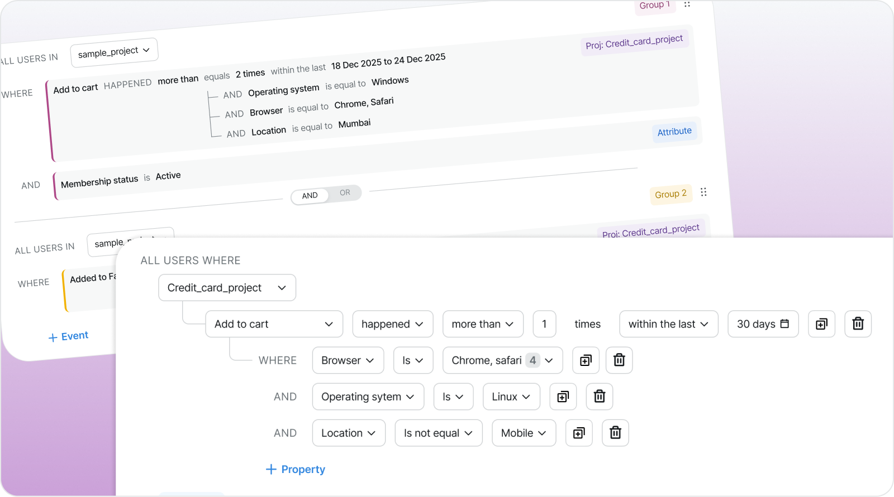
Designing a visual query-building experience that helps marketers define precise audience segments using customer attributes and behavioural events, without writing SQL.
6 min read
XX% ↓
Time to build a segment
XX% ↓
Audience requests to the data team
Xx ↑
Segments built by marketers themselves
Replace each XX with your real numbers and adjust the labels to what was measured. If there are no measured results yet, use what the team plans to track, or remove this block.

Every segment had to be written as SQL by someone else. A small change meant a new request, so campaigns waited and targeting ideas went untested.
What the marketer asked
“Users who were active recently, haven’t bought in 30 days and like healthy food.”
One sentence. Three conditions.
What it took
SELECT u.user_id FROM users u
JOIN events e ON e.user_id = u.user_id
WHERE e.event_time >= NOW() - INTERVAL '7 days'
AND u.user_id NOT IN (
SELECT user_id FROM events
WHERE event_name = 'purchase'
AND event_time >= NOW() - INTERVAL '30 days')
AND u.food_preference = 'healthy'
GROUP BY u.user_id;Illustrative query. Written by someone else, every time.
And every change starts the handoff again
Change one condition, start over
Marketers knew who to target, but couldn’t build the audience themselves.
Turning intent into a query meant asking the data team. Each small change meant another request and another wait.
Every audience became a request in the data team’s queue.
Campaigns waited on queries instead of going out on time, and new targeting ideas went untested.
Here’s how that played out for Priya.
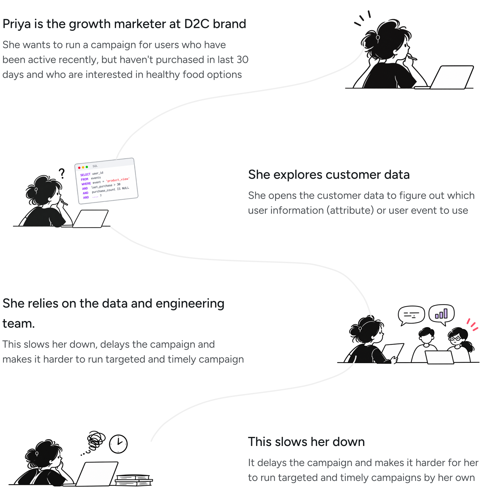
To: Data team
Every new audience meant a request to the data team.
What if the next request never had to leave the marketer’s hands?
To answer that,
let’s rewind to the request itself.
How I approached it
This is how a query only the data team could write became something a marketer could build: five steps, taken before any layout was drawn.
The problem sat between two groups: marketers who knew exactly who they wanted, and the data team who turned that into a query. I started by understanding both sides.
Two or three lines on what you looked at first: the PRD, who you spoke to (marketers, the data team, engineers), and how long the project took.
Each one came straight from what marketers and the data team told me.
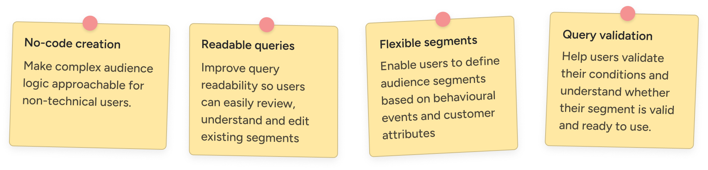
Agreeing early on what to leave out kept the first version focused.
The builder is
The builder is not
I took one everyday request, “users who added a shirt to their cart in the last 30 days”, and followed it through three moves: from the marketer’s words, to the logic underneath, to building blocks a marketer could use.
Capture the intent
A marketer describes the audience in plain words, the way they would ask a colleague.
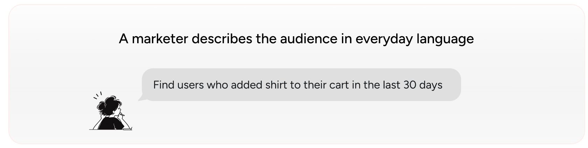
Decode the logic
Written as SQL, the same request turns into syntax only the data team can read…
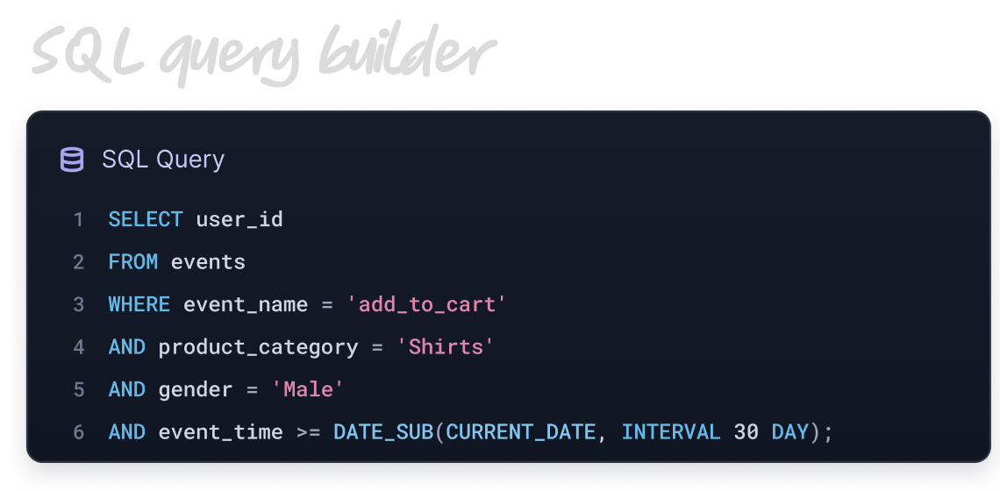
…and in an existing query editor, it becomes rows of fields, operators and values. Setting the two side by side showed what the interface could simplify without weakening the logic.
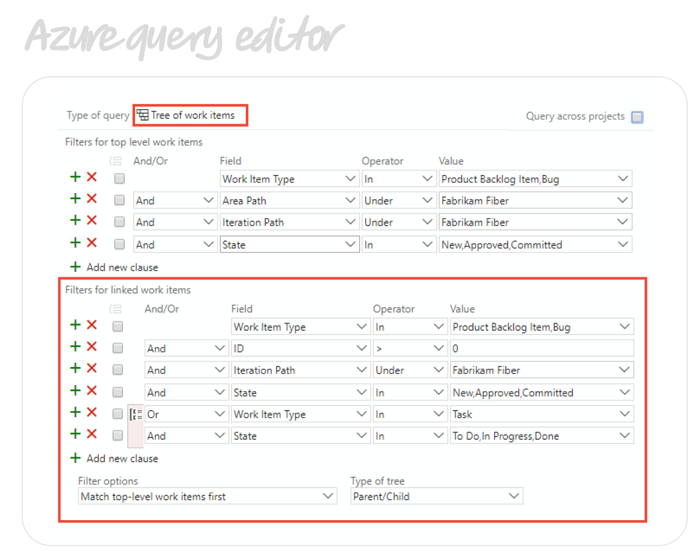
Create a visual grammar
Across scenarios, the same four ideas kept repeating: what a user did, who they are, how a rule is checked and when. These became the building blocks.
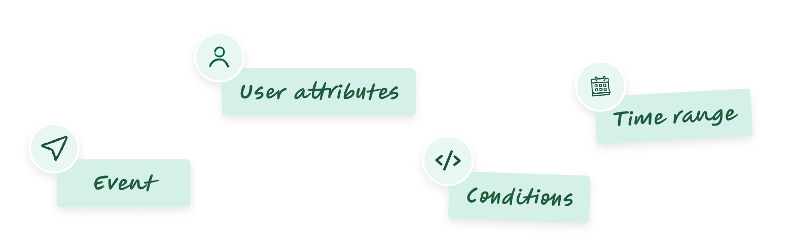
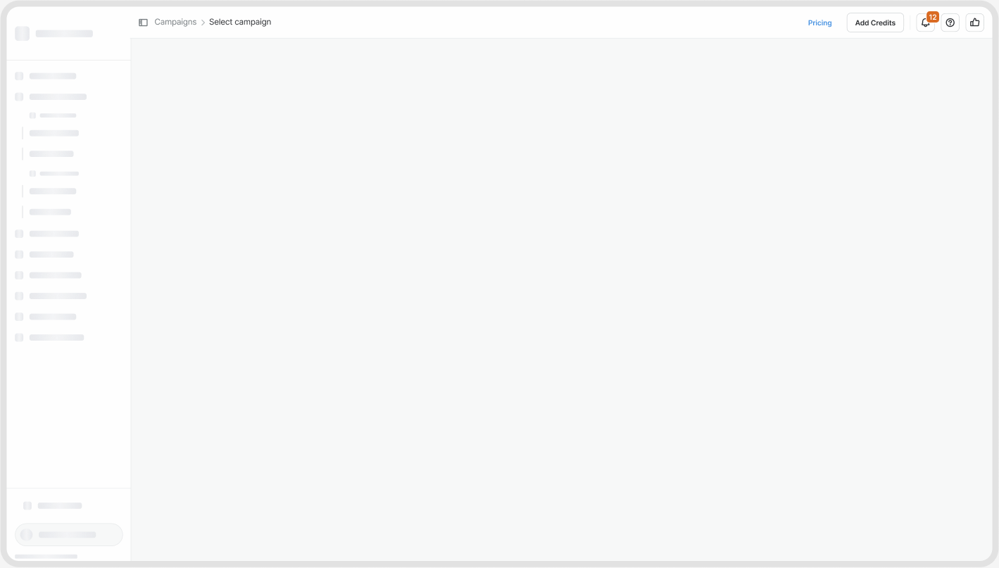
All users where
Marketers describe an audience as a sentence, not as tables and joins. So the building blocks line up the same way: who did what, how often, when, and with which details.
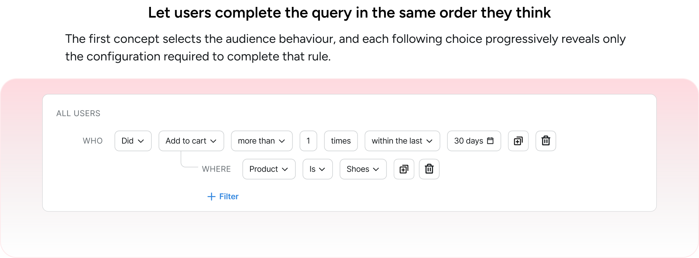
With the goals, the scope and the sentence in place, one question was left: how should all of this sit on a single screen?
Explorations
I explored multiple layouts to determine how events, filters, and conditions could work together in a clear and intuitive interface. Each iteration helped me refine the hierarchy, simplify interactions, and make complex query logic easier to follow.
A few explorations that shaped the final direction
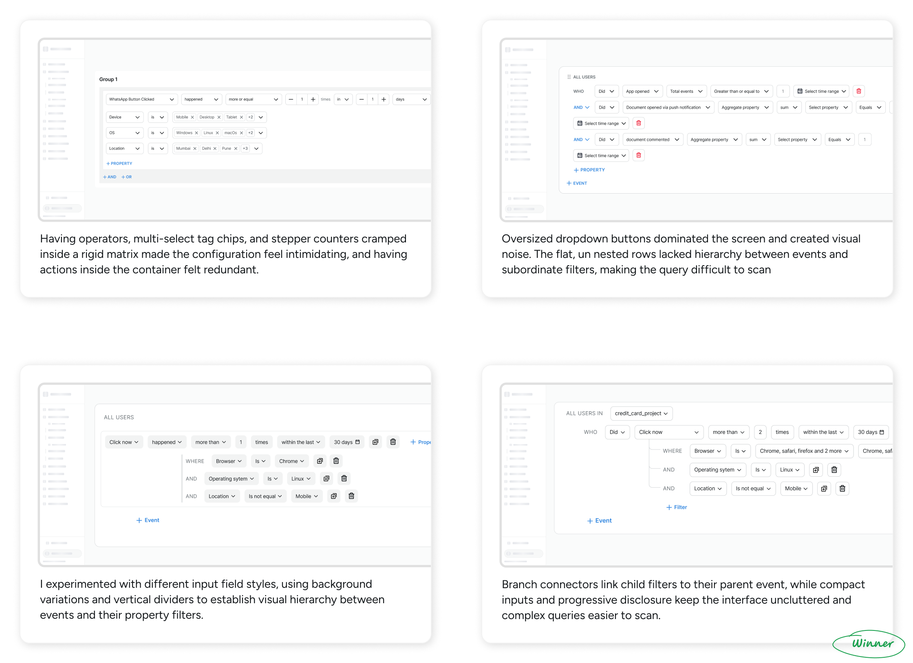
One or two lines on how the options were compared: who reviewed or tested them, and what they said that settled it.
The final design
Browse events, explore user attributes or search across both to find what the audience should be built on.
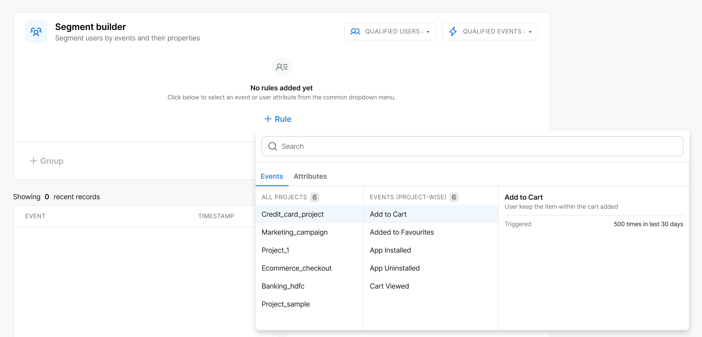
One search across events, attributes and projects
Built to scale: a new data source becomes one more tab, not a new menu
Events are grouped by the project they come from, so large accounts stay easy to browse
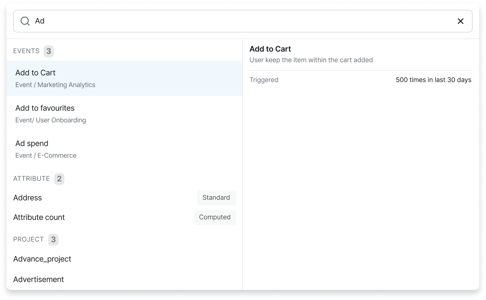
Results come back grouped into events, attributes and projects
Pick the event, how often it happened and the time window, then add properties if needed. Separate entry points for properties, rules and groups keep simple segments light while still supporting advanced logic.

A rule reads left to right: the event, how often it happened and in what time window
Properties branch off their event, joined by AND, each with its own duplicate and delete
Say the audience is people who clicked in the last 30 days and like healthy food. The second part is something we know about a person, not something they did. So it goes into the same group as a profile attribute, and only needs a value to match, with no frequency or time window.
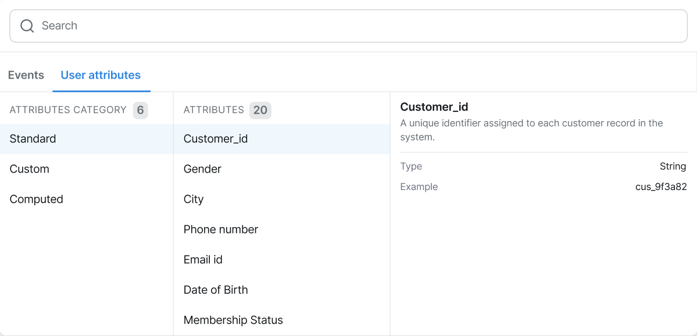
Finished rules collapse into plain sentences, while the active one stays editable. Indentation, AND labels and project tags keep the structure easy to scan and safe to reopen.
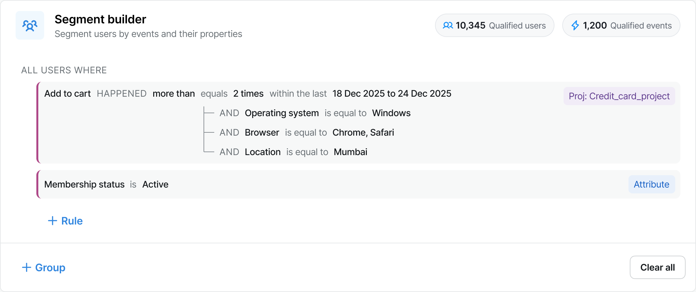
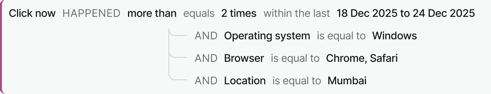
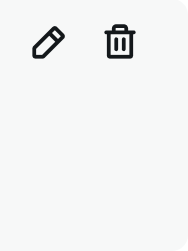
Every condition updates the matching users right below the query, so marketers can check their logic and feel confident before creating the segment.
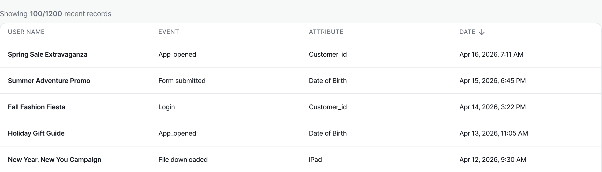
Qualified users and events update with every condition you add
Each matching user with the event and attribute that qualified them, refreshed as the query changes
That’s a wrap
Segment building moved from a data-team request to something marketers do themselves.
Add the outcome here: early feedback, a quote, or a number (for example segments created without the data team, or time to build one). Change the line above if it overstates what happened.
Reflection
Learnings: one or two things you would do differently.
Questions I’d like to explore next:
Both questions come from the PRD’s out-of-scope list. Keep them only if they’re fine to mention.
You’ve reached the end. Here’s another story
Helo.ai helps businesses send marketing messages over SMS, WhatsApp and RCS. I turned a 6-screen setup into 3 simple decisions.
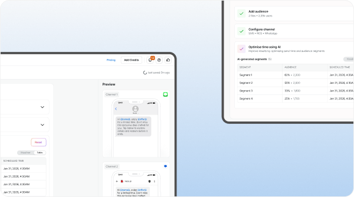